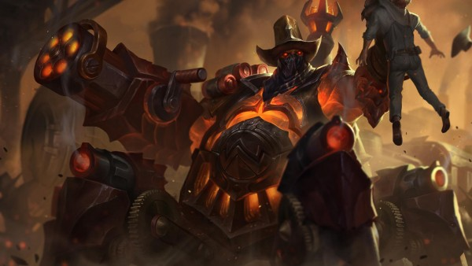

Hướng dẫn sử dụng Ngọc Tái Tổ Hợp mùa giải 2019: Hãy chọn ngọc đúng!
Đừng ông nào cầm Teemo lấy Dư Chấn nữa nhé...
 Cơ Chế Hoạt Động |
Cơ Chế Hoạt Động |
 July 19, 2019 |
July 19, 2019 |
 Trung Anh Nguyen
Trung Anh Nguyen
Ngọc Tái Tổ Hợp là một trong những hệ thống lối chơi hay nhất mà Liên Minh Huyền Thoại từng phát triển, dùng để thay cho cả hệ thống ngọc và bảng bổ trợ cũ. Tuy nhiên, Ngọc Tái Tổ Hợp không phải là một hệ thống dễ sử dụng, và đến giờ này vẫn còn rất nhiều người chơi chưa thông hiểu cách để tối ưu hóa những bảng ngọc mình chọn cho từng trận đấu. Hãy cùng xem qua cẩm nang hướng dẫn cách sử dụng từng loại ngọc để thực sự tối ưu hóa chúng khi cày rank trong mùa giải mới nhé!
Chuẩn Xác
Sẵn Sàng Tấn Công
Sẵn Sàng Tấn Công là một trong những ngọc siêu cấp thích hợp với gần như mọi Đấu Sĩ và Xạ Thủ có sử dụng đòn đánh tay. Vì là một viên ngọc theo dạng “vô thưởng vô phạt”, Sẵn Sàng Tấn Công không mạnh trong những pha đánh khô máu như Chinh Phục, cũng không tăng lượng sát thương theo thời gian cho một Xạ Thủ lên mức vượt trội như Nhịp Độ Chết Người. Điểm mạnh của Sẵn Sàng Tấn Công là dễ kích hoạt, mạnh ở đầu trận và gần như luôn có hiệu quả trong mọi tình huống. Hãy sử dụng Sẵn Sàng Tấn Công cho các Đấu Sĩ nếu bạn không có quá nhiều thời gian để kích hoạt Chinh Phục (có kĩ năng tái tạo đòn đánh thì càng tốt), và cho Xạ Thủ nếu bạn cần đánh nhau sớm từ giai đoạn đầu.
Nhịp Độ Chết Người
Một trong những viên ngọc siêu cấp mạnh nhất nếu được kích hoạt. Nó tăng cho Xạ Thủ, hoặc đôi khi là các đấu sĩ phụ thuộc đòn đánh một lượng sát thương theo thời gian cực lớn sau 1.5 giây trong giao tranh với tướng. Điểm yếu của Nhịp Độ Chết Người là nó khá vô dụng ở đầu trận, và cũng sẽ vô dụng nếu bạn không được thoải mái xả sát thương sau khi kích hoạt. Nhìn chung Nhịp Độ Chết Người chỉ nên được sử dụng trên các Xạ Thủ, bởi họ là những vị tướng có thể “đợi” 1.5 giây tốt nhất. Còn với các đấu sĩ, kể cả những Yi, Nocturne, Tryndamere,… thì Chinh Phục hoặc Sẵn Sàng Tấn Công sẽ là những ngọc tốt hơn.
Bước Chân Thần Tốc
Một trong những ngọc siêu cấp mạnh nhất ở giai đoạn đi đường, với khả năng cung cấp hồi phục miễn phí. Về cuối trận, Bước Chân Thần Tốc tuy không cung cấp sát thương, nhưng 30% tốc độ di chuyển cộng thêm mỗi khi tung đòn đánh tích điện sẽ giúp các Xạ Thủ dễ dàng thả diều hơn, đồng thời tăng độ cơ động cho một số vị tướng đặc thù như Graves, Akali. Nếu phải đối đầu với một hỗ trợ cấu máu, Bước Chân Thần Tốc có lẽ là người bạn tốt nhất của bạn. Ngoài ra, với một số Xạ Thủ ưu tiên độ cơ động hơn sát thương (Tứ Ca của chúng ta chẳng hạn), thì Bước Chân Thần Tốc cũng là một lựa chọn không tồi. Ngoài ra, có một số vị tướng Pháp Sư đặc thù như Twisted Fate, Kassadin, Akali, hoặc Graves cũng có thể tận dụng loại ngọc siêu cấp này.
Một thời Sách Phép từng là ngọc siêu cấp bắt buộc trong mỗi trận đấu chuyên nghiệp, nhưng giờ thì chỉ còn Urgot dùng nó một cách hiệu quả nhất mà thôi.